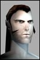

Argulace
Supa Leet
 |  Statement to OT Personnel - Official MoK Statement to OT Personnel - Official MoKOT guild leaders... You are hereby put on notice.
Mercenaries of Kai has seen a drastic decrease in the participation of on the fly pvp events from all OT guilds. Due to this situation and the lack of leadership present for some large guilds that are holding high-level players who would be active IF they had a leader... MoK formally puts you on notice of the following.
MoK is actively recruiting pvp and non-pvp oriented personnel to create an organization of good numbers and good people so that OT can again compete both in 2ho to fight for OT property and to kill special mob's such as Tarsque.
These things are no longer available to OT because the Clans have become too powerful and will in fact kill you outnumbered or not.
You can whine and cry and complain all you want, it will change nothing.
I suggest you leaders figure out what your supposed to be doing besides sitting in leader chat talking about the rain in Clon****. This is a conflict, conflict means PVP and if youre not ready to face that I suggest you go play "Fake Leader" in another game.
I repeat, MoK is actively recruiting pvp and non-pvp oriented players to compete for special mobs and territory in coming patches.
Consider yourselves put on notice.
Regards,
Apprentice Ismael Argulace Kerans
President
Mercenaries of Kai
http://www.totalaggression.com/ao
Aggression is in everyone, letting it out is only a matter of time.
OOC PS: IF any of you org leaders don't like what I just had to say, your welcome to challenge my words with showing me you have what it takes to earn MoK's respect in the OT arena. Name your time and date. Oh... and pack a lunch, cause this ain't "Yo Mamma's Fixer" |
NERFED
Phear Leet
| quote:
Name your time and date. Oh... and pack a lunch, cause this ain't "Yo Mamma's Fixer"
Hahaha nice one Arg lmfao |


 Anarchy Online Bulletin Board > Game-Play > The World of Rubi-Ka > Statement to OT Personnel - Official MoK
Anarchy Online Bulletin Board > Game-Play > The World of Rubi-Ka > Statement to OT Personnel - Official MoK Last Thread Next Thread
Last Thread Next Thread 
 May 8th, 2002 05:28
May 8th, 2002 05:28